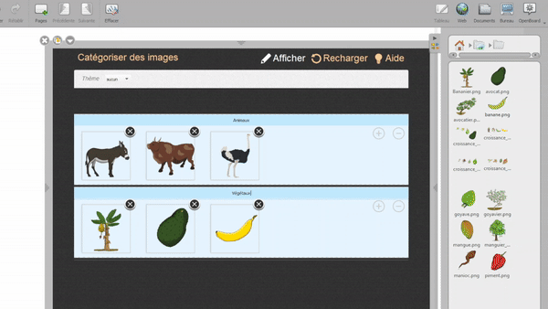

تمارين تفاعلية سهلة التخصيص
يوفر OpenBoard مجموعة من الأنشطة التفاعلية القابلة للتخصيص، وهي مناسبة للتلاميذ الأصغر سناً وغيرهم، مثل: التصنيف، والحساب الذهني، والتذكر، وغيرها.
يمكن الوصول إليها في المكتبة: انقر على
 .
.
مثال: " تصنيف الصور"
لننشئ تمريناً باستخدام النشاط التفاعلي " تصنيف الصور ": .
1) ضع النشاط التفاعلي وافتح المحرر
اسحب النشاط التفاعلي وأفلته على اللوحة، ثم انقر على "تعديل ".
2) تسمية الفئات
أعد تسمية الفئات حسب الحاجة. يمكنك أيضاً إضافة فئات أو حذفها باستخدام أيقونتي “+” و “−”.

3) إضافة الصور
أضف الصور المناسبة لكل فئة (بالسحب والإفلات، أو بالاختيار من المكتبة، وغير ذلك).

4) عرض التمرين وتنفيذه
انقر على "عرض" لبدء النشاط في وضع الطالب.
